Graph Neural Networks for Recommender System#
recommender systems have a lot of applications from e-commerce like amazon recommending suitable products to social media platforms like pinterest or instagram and also entertainment such as netflix movies spotify music
the main motivation for recommenders is to reduce the huge amount of items to a small tangible subset
people nowadays are overloaded with content and with these systems we can filter out the relevant items and also discover new things that might be interesting
classical approaches for recommender systems#
content-based filtering and collaborative filtering content-based filtering uses the similarities between items to recommend items that the user might like
for example if you watch the first part of harry potter a likely recommendation would be the second part similarities can be calculated based on all sorts of item features such as name
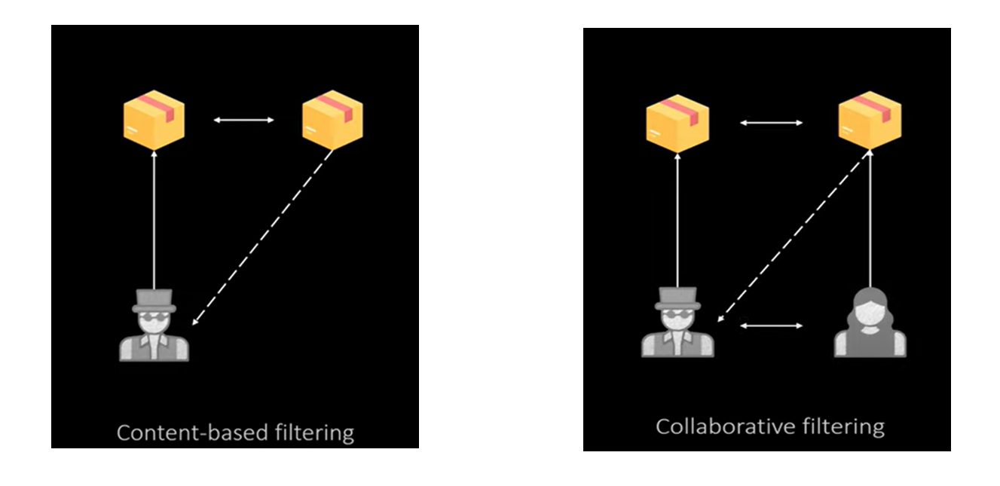
content type or producer collaborative filtering on the other hand uses the similarities between the user to filter out elements that can be recommended
collaborative filtering#
is a technique used in recommender systems to predict a user’s preferences based on the preferences of similar users or items. It leverages historical user interactions, such as ratings, clicks, or purchases, to make personalized recommendations.
collaborative filtering is often modeled as a matrix completion problem that can be visualized in such a grid
the values in the grid represent ratings from users for specific items and
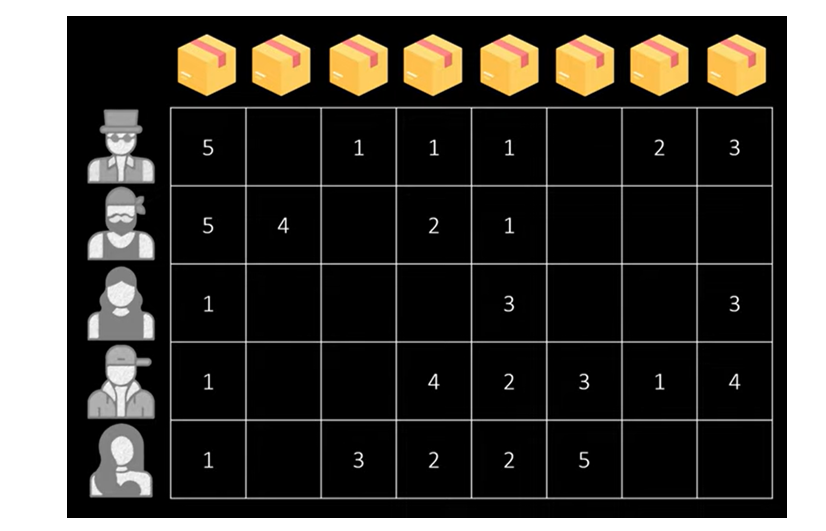
obviously we don’t have that for all the items that’s why the task is to fill up the missing cells a very popular method to fill up these cells is called matrix
to fill up these cells is called matrix factorization it maps the users and items to embeddings that are arranged in the same embedding space
these are also called latent factors and the whole thing is then called latent factor model
so here you can see that every user and item has a bar next to it which which represents a learned embedding vector that represents the user or item characteristics this vector can contain obvious features but also totally uninterpretable values
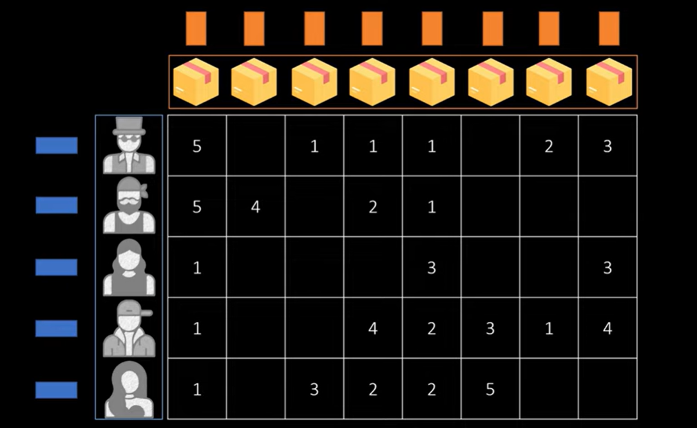
in order to map the latent codes into the same embedding space a dot product between the user vectors and the item vectors is used as similarity measure for this the item matrix is transposed
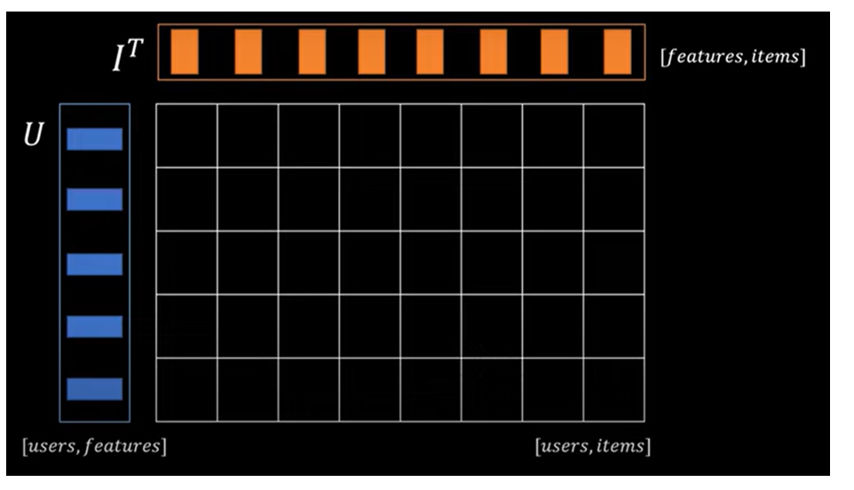
so that the shapes match this dot product generates the predicted matrix on which high values indicate that a user item combination matches and low values that we should better not
recommend this item formerly this predicted rating matrix can be expressed like this this means we are decomposing the matrix r into the product of two lower ranked matrices we initialize the latent code somehow for example randomly and because we have the true ratings for some of these cells we can very easily optimize the latent codes with respect to some loss functions such as mean squared error
\( \hat{R} \approx U \cdot I^T \)
this matrix factorization idea has many extensions such as considering user biases for the ratings including additional features or also considering temporal effects when you think about it we decompose the values of this matrix in such a way so that each of the latent factors contains typical characteristics of that product or item and this is already some sort of representation learning however this is based on a matrix today we want to have a look at how we can model this as a graph representation task
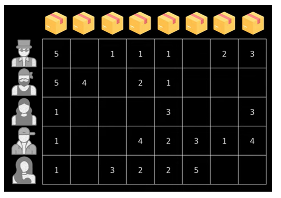
when you think about it we decompose the values of this matrix in such a way so that each of the latent factors contains typical characteristics of that product or item and this is already some sort of representation learning however this is based on a matrix today we want to have a look at how we can model this as a graph representation task
model graph representation task#
this matrix can quite easily be represented as a graph and not any type of graph but a bipartite graph so this is simply a graph that consists of two sets one user set and then an item set and then you have connections between these different nodes
this is the most common form of modeling graph based recommender systems in a few minutes we will also see some alternative ways how we can arrange this graph
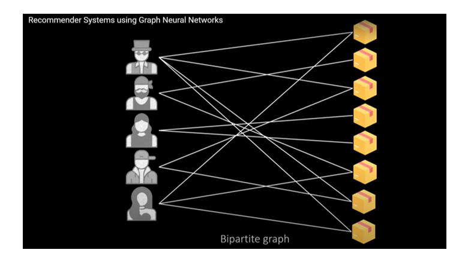
in this most basic form a connection between a user and item simply means that the user has interacted with this item in some way if available we can also extend the edge information with an edge weight that corresponds to the rating from this point it’s very easy to build a graph neural network that performs link prediction which means it predicts which user and items match with the highest probability
one immediate advantage of gnns compared to matrix factorization is that they are able to aggregate multi-hop neighborhoods whereas matrix representations typically only account for direct connections
Litrature / Graph Convolutional Matrix completion#
one of the earlier works using gnns comes from fondenberg kipf and welling and is called graph convolutional matrix completion
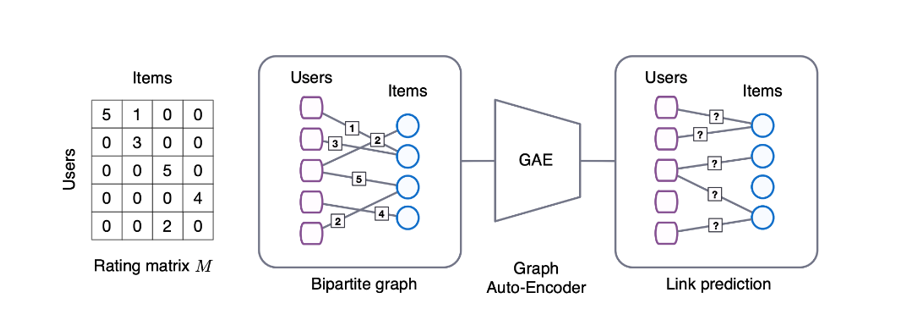
Rating matrix M :#
the rating matrix on the left is converted into a bipartite graph and the edges are enriched with the rating scores
each user and item is represented by a feature vector
Graph Auto-Encoder :#
the heart of the model is a graph auto encoder which has a task to compress the edge information in such a way that it is possible to reconstruct it from the compressed representation
in order to learn a representation for each user and item these layers also consider the different rating types are and apply different transformations per type
Link prediction :#
link prediction is performed based on the final item and user embeddings as a formula this can be expressed like this which means the users are multiplied with items and a learnable transformation queue is applied finally softmax is used to predict probabilities for the different edge
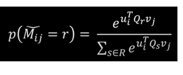
Litrature / pinSAGE#
another gnn based recommender model is called pinsage and was developed by researchers from pinterest and stanford university
on pinterest the users can have boards on which they pin items they are interested in such as images recipes clothes and more of course these items can be shared among the boards and modeled as a graph
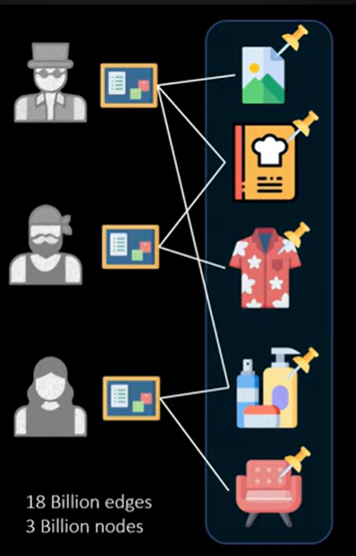
the only issue is that they have really a lot of items available which makes this graph too big to fit into the gpu memory in fact their data set has 18 billion edges and 3 billion nodes
pin sage is a scalable gnn model that can handle such big graphs by sampling a neighborhood around a node this allows the model to train on a subset of the nodes but generate embeddings even for unseen data
overall this idea is based on graph sage which also uses sampling to make the learning process inductive
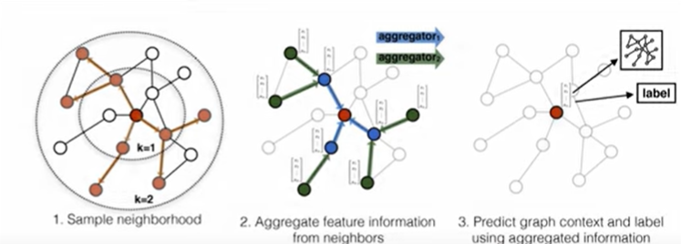
the difference is however that the sampling is based on random walks or more specifically the visit count of random walks which assesses the importance of specific nodes and this means the size of the neighborhood can be reduced significantly
they also propose some parallelization patterns that can speed up the training
you might have asked yourself how the nodes are represented in this graph what what do we use as node features ????#
we can’t simply use an image or a text we need to compress it somehow and the images were converted into embeddings using a vgg16 cnn model and all of the text was converted with a Word to Wait Model
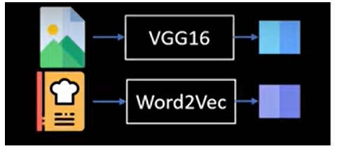
as a result each node could be represented by a combined vector of visual and textual information
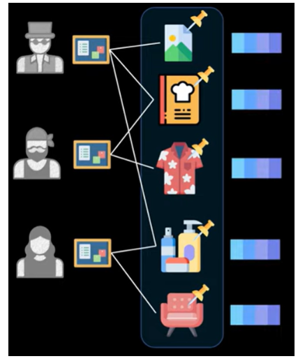
in the end this model produces embeddings in a joint embedding space which can be used to find their nearest neighbor in order to recommend related pins
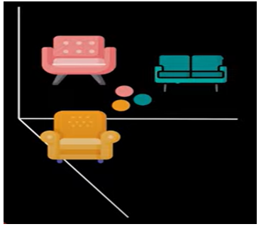
sequential recommenders as graph#
a typical scenario is the following a user buys a sequence of items first a table then a monitor and a keyboard and finally some headphones
based on this purchase history what might be the next item it seems like he’s building a home office setup and therefore an office chair is probably a good recommendation
this can also be based on the purchase history of other users that might have already bought this item
now how do you model this setup as a graph representation learning task
a recently published paper called dynamic gnns for a sequential recommendation uses temporal gnns to learn spatial and temporal embeddings
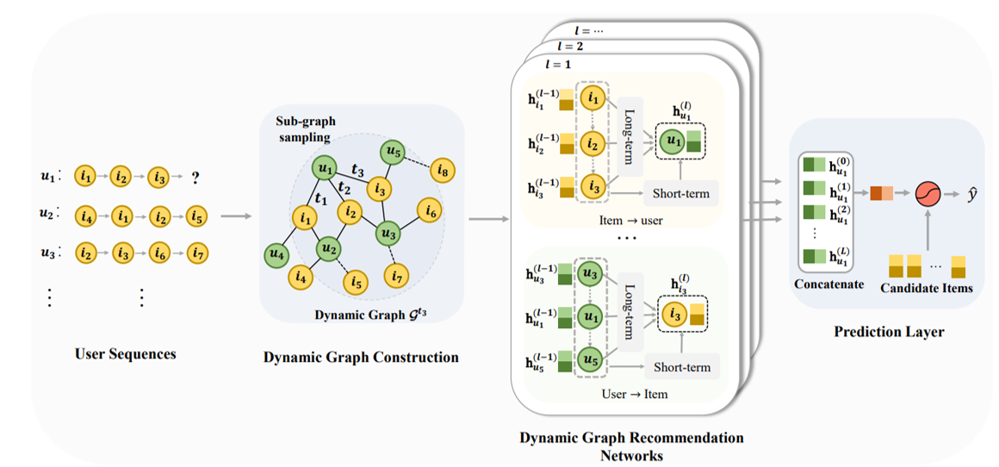
the first step is to convert these item sequences per user into a graph representation
this is done by building a dynamic graph
between the items and users depend on the time step when we look at the specific time step t in this case t2 the graph snapshot might look like this
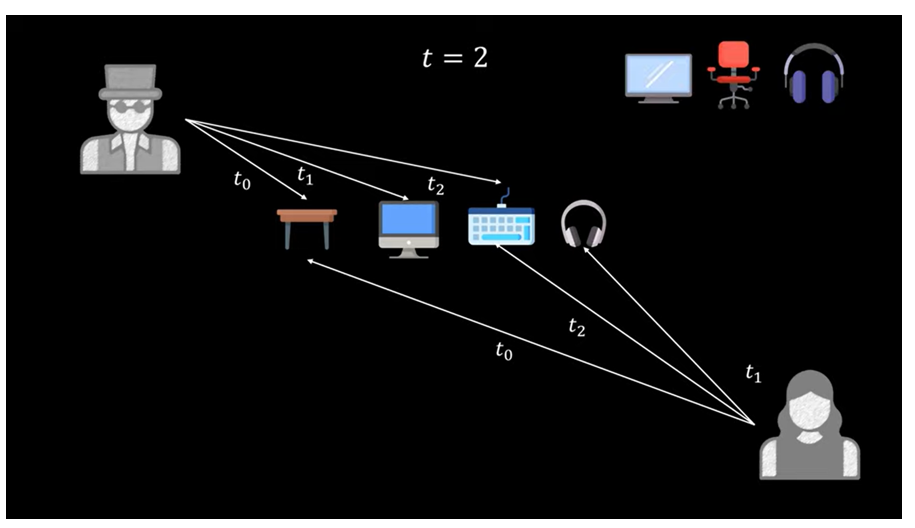
we have three interactions from each of the users and only the edges of the current and past
interactions are part of this graph other items and users can also be part of the graph but are maybe not connected
the task is then to predict which item a user is connected to next
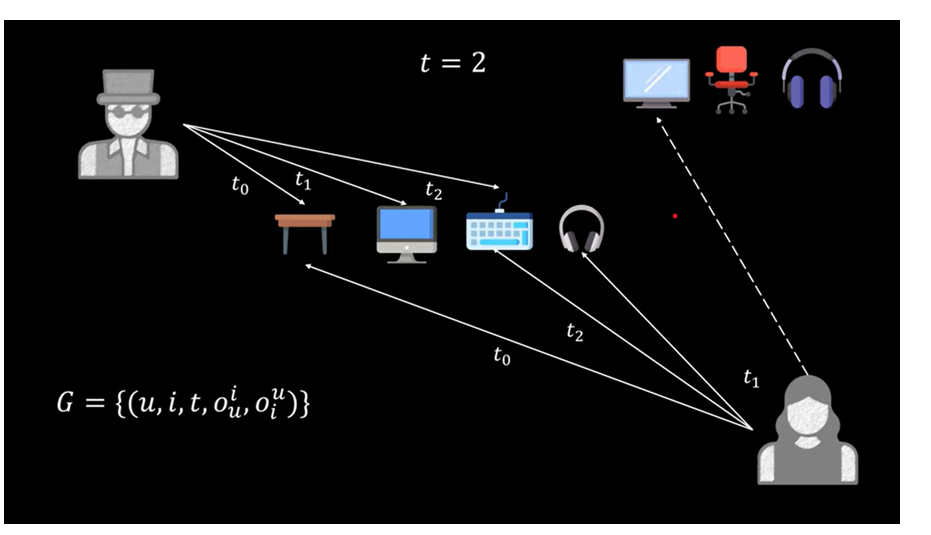
users u items i a time step t and additionally information about the ordering of the interactions this is simply a counter that tells us how many interactions a user or item already has this allows the model to also learn sequential information so overall this is also just a bipartite graph but just with an additional temporal dimension and additionally we have this ordering information two time steps later the graph might look like this 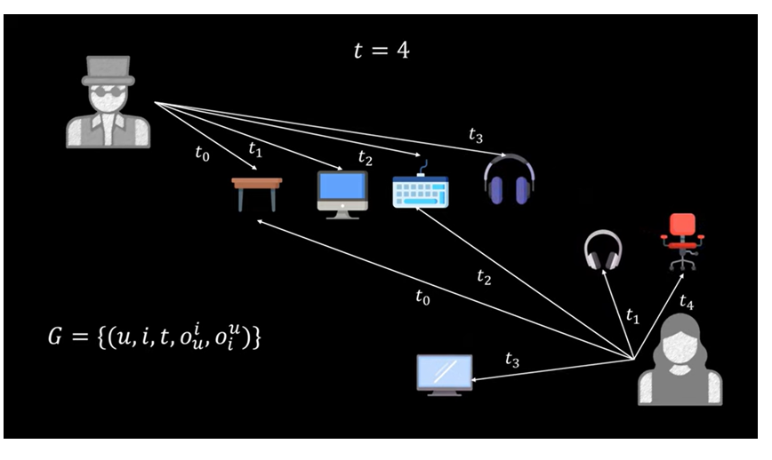
as you can imagine this graph would explode over time as it just keeps growing because of that the authors only sample the most recent interactions